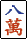
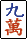

Riichi Mahjong Cheat Sheet
‘Riichi’ this, ‘Mahjong’ that. Why don't you Riichi down here and grab Mah-jong.
Mini-Points (Fu) Calculation
All hands start with a base of 20 fu. Each additional source of fu is added to the total, then the value is rounded up to the nearest 10.
Triplets / Quads
| Type | Simples | Terminals / Honors |
|---|---|---|
| Open Triplet (Minkou) |
2 fu | 4 fu |
| Closed Triplet (Ankou) |
4 fu | 8 fu |
| Open Kan (Minkan) |
8 fu | 16 fu |
| Closed Kan (Ankan) |
16 fu | 32 fu |
A tip for memorization:
- Each triplet is worth 4 fu; halved if open, and doubled if a terminal/honor.
- Each kan is worth 16 fu; halved if open, and doubled if a terminal/honor.
Waits
Each of the the five basic wait patterns are worth a certain amount of fu.
| Type | Value | Example | |
|---|---|---|---|
| Open Wait (Ryanmen) |
0 fu | waits: | |
| Dual Pair Wait (Shanpon) |
0 fu | waits: | |
| Closed Wait (Kanchan) |
2 fu | waits: | |
| Edge Wait (Penchan) |
2 fu |
  waits: |
|
| Pair Wait (Tanki) |
2 fu | waits: |
Complex waits are always comprised of multiple different basic waits, and will be scored as a basic wait upon winning.
When a hand can be interpreted in multiple ways the interpretation that scores the most points is used.
The Pair/Head
If the hand's pair would score a yaku as a triplet, then it scores 2 fu.
If the pair is both the round win and the seat wind, then it may score 2 fu or 4 fu, depending on the rules used.
Win Condition
Winning by Ron with a closed hand scores 10fu.
A win by tsumo, whether open or closed, is worth 2 fu. There are only two notable exceptions:
- If the hand qualifies for pinfu, these 2 fu are waived.
- In a few scoring variations, a win by dead wall draw is also ineligible for the +2 fu from tsumo.
Special Cases
- Seven Pairs hands are always fixed at 25 fu.
- If an open hand has no other fu (is at 20 fu), it is set to 30 fu.
Standard Scoring Table
| Han / Fu | 20 | 25 | 30 | 40 | 50 | 60 | 70 | 80 | 90 | 100 | 110 |
| 1 Han | 4001 — |
— — |
500 1500 |
700 2000 |
800 2400 |
1000 2900 |
1200 3400 |
1300 3900 |
1500 4400 |
1600 4800 |
1800 5300 |
| 2 Han | 700 — |
— 2400 |
1000 2900 |
1300 3900 |
1600 4800 |
2000 5800 |
2300 6800 |
2600 7700 |
2900 8700 |
3200 9600 |
3600 10600 |
| 3 Han | 1300 — |
1600 4800 |
2000 5800 |
2600 7700 |
3200 9600 |
39002 116002 |
4000 12000 |
||||
| 4 Han | 2600 — |
3200 9600 |
39002 116002 |
4000 12000 |
|||||||
| 5 Han (Mangan) |
4000 12000 |
||||||||||
| 6,7 Han (Haneman) |
6000 18000 |
||||||||||
| 8,9,10 Han (Baiman) |
8000 24000 |
||||||||||
| 11,12 Han (Sanbaiman) |
12000 36000 |
||||||||||
| 13+ Han (Yakuman) |
16000 48000 |
||||||||||
| Han / Fu | 20 | 25 | 30 | 40 | 50 | 60 | 70 | 80 | 90 | 100 | 110 |
| 1 Han | 200/4001 — |
— 1600 |
300/500 1000 |
400/700 1300 |
400/800 1600 |
500/1000 2000 |
600/1200 2300 |
700/1300 2600 |
800/1500 2900 |
800/1600 3200 |
900/1800 3600 |
| 2 Han | 400/700 — |
— 1600 |
500/1000 2000 |
700/1300 2600 |
800/1600 3200 |
1000/2000 3900 |
1200/2300 4500 |
1300/2600 5200 |
1500/2900 5800 |
1600/3200 6400 |
1800/3600 7100 |
| 3 Han | 700/1300 — |
800/1600 3200 |
1000/2000 3900 |
1300/2600 5200 |
1600/3200 6400 |
2000/39002 77002 |
2000/4000 8000 |
||||
| 4 Han | 1300/2600 — |
1600/3200 6400 |
2000/39002 77002 |
2000/4000 8000 |
|||||||
| 5 Han (Mangan) |
2000/4000 8000 |
||||||||||
| 6,7 Han (Haneman) |
3000/6000 12000 |
||||||||||
| 8,9,10 Han (Baiman) |
4000/8000 16000 |
||||||||||
| 11,12 Han (Sanbaiman) |
6000/12000 24000 |
||||||||||
| 13+ Han (Yakuman) |
8000/16000 32000 |
||||||||||
1 This score is only possible when a penalty is imposed for integrating the winning tile into the hand before declaring tsumo.
2 If rounded (kiriage) mangan rule is used, score as a mangan.
Three-Player (Sanma) Scoring Table (without Tsumo-loss)
In some groups, an alternate scoring table may be used when playing three-player mahjong. This alternate scoring table prevents the value of a win by tsumo from bring worth less than a typical win by ron.
| Han / Fu | 20 | 25 | 30 | 40 | 50 | 60 | 70 | 80 | 90 | 100 | 110 |
| 1 Han | 5001 — |
— — |
800 1500 |
1000 2000 |
1200 2400 |
1500 2900 |
1700 3400 |
2000 3900 |
2200 4400 |
2400 4800 |
2700 5300 |
| 2 Han | 1000 — |
— 2400 |
1500 2900 |
2000 3900 |
2400 4800 |
2900 5800 |
3400 6800 |
3900 7700 |
4400 8700 |
4800 9600 |
5300 10600 |
| 3 Han | 2000 — |
2400 4800 |
2900 5800 |
3900 7700 |
4800 9600 |
58002 116002 |
6000 12000 |
||||
| 4 Han | 3900 — |
4800 9600 |
58002 116002 |
6000 12000 |
|||||||
| 5 Han (Mangan) |
6000 12000 |
||||||||||
| 6,7 Han (Haneman) |
9000 18000 |
||||||||||
| 8,9,10 Han (Baiman) |
12000 24000 |
||||||||||
| 11,12 Han (Sanbaiman) |
18000 36000 |
||||||||||
| 13+ Han (Yakuman) |
24000 48000 |
||||||||||
| Han / Fu | 20 | 25 | 30 | 40 | 50 | 60 | 70 | 80 | 90 | 100 | 110 |
| 1 Han | 300/4001 — |
— — |
400/600 1000 |
500/800 1300 |
600/1000 1600 |
800/1200 2000 |
900/1400 2300 |
1000/1600 2600 |
1100/1800 2900 |
1200/2000 3200 |
1400/2200 3600 |
| 2 Han | 500/800 — |
— 1600 |
800/1200 2000 |
1000/1600 2600 |
1200/2000 3200 |
1500/2400 3900 |
1700/2800 4500 |
2000/3200 5200 |
2200/3600 5800 |
2400/4000 6400 |
2700/4400 7100 |
| 3 Han | 1000/1600 — |
1200/2000 3200 |
1500/2400 3900 |
2000/3200 5200 |
2400/4000 6400 |
2900/48002 77002 |
3000/5000 8000 |
||||
| 4 Han | 2000/3200 — |
2400/4000 6400 |
2900/48002 77002 |
3000/5000 8000 |
|||||||
| 5 Han (Mangan) |
3000/5000 8000 |
||||||||||
| 6,7 Han (Haneman) |
4500/7500 12000 |
||||||||||
| 8,9,10 Han (Baiman) |
6000/10000 16000 |
||||||||||
| 11,12 Han (Sanbaiman) |
9000/15000 24000 |
||||||||||
| 13+ Han (Yakuman) |
12000/20000 32000 |
||||||||||
1 This score is only possible when a penalty is imposed for integrating the winning tile into the hand before declaring tsumo.
2 If rounded (kiriage) mangan rule is used, score as a mangan.
Kanji Helper (No 日本語, no problem.)
Characters/Cracks Tiles (Manzu)
- 一
- 二
- 三
- 四
- 五
- 六
- 七
- 八
- 九
Honor Tiles
Dragon Tiles
- 發 - Green Dragon
- 中 - Red Dragon
The White Dragon in Japanese mahjong sets is typically depicted using a blank tile. In Chinese-style sets, it is more frequently depicted as a blue or black border around nothing.
Wind Tiles
- 東 - East
- 南 - South
- 西 - West
- 北 - North
Credits
Most of the information on this page was lifted from various articles on Riichi.wiki with minimal edits, and compiled here to create a digital cheat sheet to reference.
As such, all content on this page is available under Creative Commons Attribution-NonCommercial-ShareAlike.
Table of Contents
Fu Calculation Standard Score Tables Sanma Score Tables Kanji Helper Credits Back to top